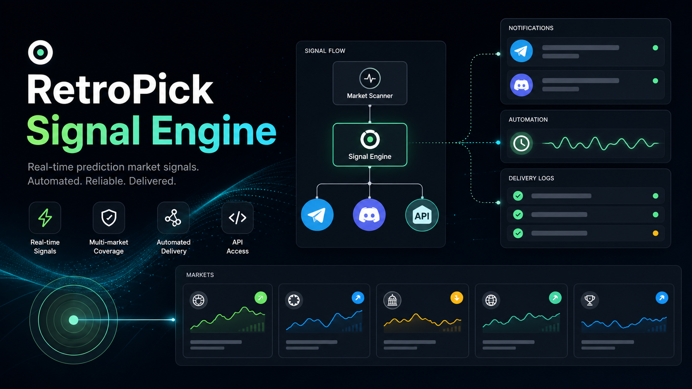

User melihat market, explore category, dan membuka market detail.
Jangan dibebani logic broadcastFinal Technical & Product Docs
RetroPick Signal Engine
Service terpisah untuk mengambil data market dari RetroPick API, memformatnya menjadi konten komunitas, lalu mengirim sinyal ke Telegram dan Discord secara otomatis atau semi-manual.

Product
RetroPick Signal Engine
Use Case
Market alert, announcement, daily recap
Integrations
RetroPick API, Telegram Bot API, Discord Webhook
Recommended Phase
MVP pull API + manual trigger, V2 webhook trigger
Architecture
Broadcast dipisah dari website utama.
RetroPick Web tetap fokus sebagai produk utama, sementara Signal Engine menjadi service distribusi konten ke komunitas.
RetroPick Web App
user/admin publish market
RetroPick API
market data, status, volume, category
Signal Engine
format + dispatch
Telegram
Discord
Sumber data market, volume, kategori, dan status.
Single source of truthAmbil data, format caption, kirim ke Telegram dan Discord.
Aman, scalable, mudah debugChannel distribusi komunitas untuk aktivasi user dan market awareness.
Tempat sinyal dikirimMain Workflow
Dua mode kerja: cron MVP dan real-time trigger.
- Signal Engine berjalan setiap 5-10 menit menggunakan cron job.
- Service mengambil market terbaru dari endpoint RetroPick API.
- Service mengecek apakah market sudah pernah dikirim.
- Caption dibuat sesuai template komunitas.
- Caption dikirim ke Telegram dan Discord.
- Log pengiriman disimpan agar tidak spam atau duplikasi.
- Admin atau team publish market dari RetroPick.
- RetroPick API memanggil endpoint Signal Engine.
- Signal Engine memvalidasi secret token.
- Konten dikirim real-time ke Telegram dan Discord.
- Status delivery disimpan untuk monitoring.
MVP Scope
Prioritas fitur untuk rilis awal.
New Market Alert
Mengirim market baru saat status published.
WajibManual Announcement
Admin bisa kirim pesan campaign atau event manual.
WajibBroadcast Log
Mencatat market yang sudah dikirim agar tidak duplikat.
WajibTelegram + Discord
Kirim pesan ke channel Telegram dan Discord webhook.
WajibTrending Market Alert
Alert saat volume market naik.
Setelah MVPAI Caption Generator
Generate caption otomatis dari data market.
Versi lanjutAPI Contract
Endpoint yang menghubungkan API, broadcast, dan monitoring.
RetroPick API
GET
/api/markets/latestNew Market Alert
GET
/api/markets/trendingTrending Alert
GET
/api/markets/:idManual broadcast
GET
/api/markets/closing-soonClosing Soon Alert
Signal Engine
POST
/broadcast/marketX-Retropick-Secret
POST
/broadcast/announcementX-Retropick-Secret
POST
/broadcast/daily-recapX-Retropick-Secret
GET
/healthOptional
GET
/logsAdmin only
POST /broadcast/market
Headers:
X-Retropick-Secret: <SECRET>
Body:
{
"marketId": "btc-100k-q4",
"title": "Will Bitcoin hit $100K before Q4 2026?",
"category": "Crypto & Finance",
"marketType": "Direction",
"url": "https://retropick-v1.vercel.app/app/markets/btc-100k-q4",
"platforms": ["telegram", "discord"]
}Database & Logging
Log delivery mencegah spam dan memudahkan audit.
CREATE TABLE broadcast_logs (
id SERIAL PRIMARY KEY,
market_id TEXT NOT NULL,
platform TEXT NOT NULL,
status TEXT NOT NULL,
message TEXT,
error_message TEXT,
sent_at TIMESTAMP DEFAULT CURRENT_TIMESTAMP
);market_idbtc-100k-q4
platformtelegram / discord
statussent / failed / skipped
error_messageWebhook failed
Security
Credential hanya boleh hidup di server/service environment.
Jangan expose Telegram token, Discord webhook, atau broadcast secret ke client-side code.
Gunakan secret header untuk endpoint broadcast internal.
Batasi request agar tidak spam menggunakan rate limit.
Validasi marketId dan URL sebelum dikirim.
Log semua percobaan broadcast, baik berhasil maupun gagal.
Content Templates
Caption reusable untuk Telegram dan Discord.
Roadmap
Bangun kecil dulu, lalu tambah automasi.
MVP Broadcast Service
Setup repo, env, Telegram sender, Discord sender, manual endpoint.
Pull API Job
Cron latest market, check log, dan prevent duplicate.
Real-time Trigger
RetroPick API trigger /broadcast/market saat publish.
Growth Alerts
Trending, closing soon, dan daily recap untuk komunitas.
AI Caption
Generate caption dari market data agar lebih hemat waktu.
Acceptance Criteria